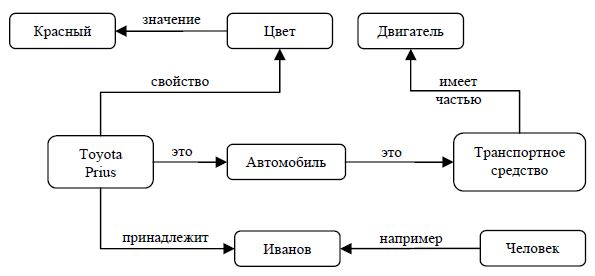
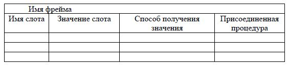
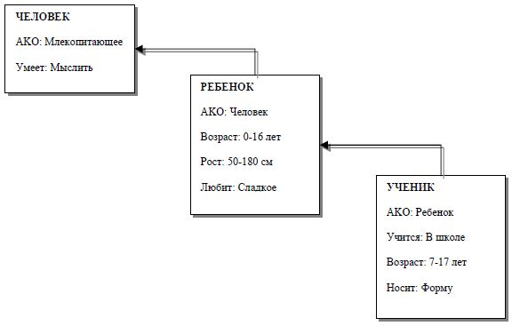

Лекция № 6
Данные и знания
При изучении интеллектуальных систем традиционно возникает вопрос – что же такое знания и чем они отличаются от обычных данных, десятилетиями обрабатываемых компьютерами. Можно взять на вооружение следующие рабочие определения данных и знаний.
Данные – это представление фактов и идей в формализованном виде, пригодном для передачи и обработки в некотором информационном процессе.
Знания – итог теоретической и практической деятельности человека, отражающий накопление предыдущего опыта и отличающийся высокой степенью структурированности. Правила использования этой информации для принятия решений. Главное отличие знаний от данных состоит в их активности, то есть появление новых фактов или установление новых связей может стать источником активности системы.
Для хранения данных используются базы данных (БД), для которых характерны большой объем и относительно небольшая удельная стоимость информации. Для хранения знаний соответственно применяются базы знаний (БЗ), обладающие зачастую небольшим объемом, но являющиеся исключительно дорогими информационными массивами. База знаний – основа любой интеллектуальной системы. Раздел искусственного интеллекта, изучающий базы знаний и методы работы со знаниями, называется инженерией знаний.
Модели представления знаний
Существуют десятки моделей представления знаний для различных предметных областей. Большинство из них может быть сведено к следующим классам:
- продукционные модели;
- семантические сети;
- фреймы;
- формальные логические модели.
Рассмотрим подробнее каждый класс представления знаний.
Продукционная модель
Продукционная модель (модель, основанная на правилах) позволяет представить знания в виде предложений, называемых продукциями, типа «Если (условие), то (действие)». Под условием (антецедентом) понимается некоторое предложение-образец, по которому осуществляется поиск в БЗ, а под «действием» (консеквентом) – операции, выполняемые при успешном исходе поиска (они могут быть промежуточными, выступающими далее в качестве условий и терминальными или целевыми, завершающими работу системы).
Чаще всего вывод на такой базе знаний бывает прямой (от данных к поиску цели) или обратный (от цели для ее подтверждения – к данным).
Продукционная модель чаще всего применяется в промышленных экспертных системах. Она привлекает разработчиков своей наглядностью, высокой модульностью, легкостью внесения дополнений и изменений и простотой механизма логического вывода.
Недостатком продукционной модели является то, что при накоплении достаточно большого количества (порядка нескольких сотен) продукций они начинают противоречить друг другу. Рост противоречивости продукционной модели может быть ограничен путем введения механизмов ограничений и возвратов. Механизм исключений означает, что вводятся специальные правила-исключения. Их отличает большая конкретность в сравнении с обобщенными правилами. При наличии исключения основное правило не применяется. Механизм возвратов означает, что логический вывод может продолжаться даже в том случае, если на каком-то этапе вывод привел к противоречию: просто необходимо отказаться от одного из принятых ранее утверждений и осуществить возврат к предыдущему состоянию.
Существует большое количество программных средств, реализующих продукционный подход: язык OPS 5, оболочки ЭС – EXSYS Professional, Kappa, ЭКСПЕРТ, инструментальные системы ПИЭС и СПЭИС и др.
Семантические сети
Семантическая сеть – это ориентированный граф, вершины которого отображают некоторые понятия, а дуги – отношения между ними. Таким образом, семантическая сеть отражает семантику предметной области в виде понятий и отношений.
Идея систематизации на основе каких-либо семантических отношений не раз возникала в ранние периоды развития науки. Примером этого может служить биологическая классификация Карла Линнея 1735 г. Прародителями современных семантических сетей можно считать экзистенциальные графы, предложенные Чарльзом Пирсом в 1909 г. Они использовались для представления логических высказываний в виде особых диаграмм. Пирс назвал этот способ «логикой будущего».
Компьютерные семантические сети были детально разработаны Ричардом Риченсом в 1956 году в рамках проекта Кембриджского центра изучения языка по машинному переводу.
Количество типов отношений в семантической сети определяется ее создателем исходя из конкретных целей. В реальном мире их число стремится к бесконечности.
Наиболее часто возникает потребность в описании отношений между элементами, множествами и частями объектов. Отношение между объектом и множеством, обозначающее, что объект принадлежит этому множеству, называется отношением классификации (ISA). Связь ISA предполагает, что свойства объекта наследуются от множества. Обратное к ISA отношение используется для обозначения примером, поэтому так и называется – «Example».
Отношение между надмножеством и подмножеством называется AKO (A Kind Of). Элемент подмножества называется гипонимом, а надмножества – гиперонимом, само же отношение называется отношением гипонимии. Это отношение определяет, что каждый элемент первого множества входит и во второе (выполняется ISA для каждого элемента), а также логическую связь между самими подмножествами: что первое не больше второго и свойства первого множества наследуются вторым.
Объект, как правило, состоит из нескольких частей, или элементов. Важным отношением является HasPart, описывающее части/целые объекты (отношение меронимии). Мероним – это объект, являющийся частью для другого. Холоним – это объект, который включает в себя другое. Например, двигатель – это мероним для автомобиля, а дом – холоним для крыши.
Часто в семантических сетях требуется определить отношения синонимии и антонимии. Используются также следующие отношения:
- функциональные связи (определяемые обычно глаголами «производит», «влияет» и др.);
- количественные (больше, меньше, равно);
- пространственные (далеко от, близко к, за, под, над);
- временные (раньше, позже, в течение
- атрибутивные (иметь свойство, иметь значение);
- логические (и, или, не);
- лингвистические.
Для всех семантических сетей справедливо разделение по арности и количеству типов отношений.
По количеству типов, сети могут быть однородными и неоднородными. Однородные сети обладают только одним типом отношений (таковой является классификация биологических видов с единственным отношением AKO). В неоднородных сетях количество отношений больше двух. Классические иллюстрации данной модели представления знаний представляют именно такие сети.
По арности, типичными являются сети с бинарными отношениями (связывающими ровно два понятия). Бинарные отношения просты и удобны в применении. На практике, однако, могут понадобиться отношения, связывающие более двух объектов – N-арные.

Рис. 1. Пример семантической сети
Недостатком данной модели представления знаний является сложность организации процедуры поиска вывода на семантической сети.
Для реализации семантических сетей существуют специальные сетевые языки, например NET, язык реализации систем SIMER+MIR и др. Широко известны экспертные системы, использующие семантические сети в качестве языка представления знаний – PROSPECTOR, CASNET, TORUS.
Фреймы
Фрейм – это абстрактный образ для представления некоего стереотипа информации.
В психологии известно понятие абстрактного образа. Например, произнесение вслух слова «комната» порождает у слушающих образ комнаты: «жилое помещение с четырьмя стенами, полом, потолком, окнами и дверью, площадью 6-20 м2». Из этого описания ничего нельзя убрать (например, убрав окна, мы получим уже не комнату, а чулан), но в нем есть т.н. слоты – незаполненные значения некоторых атрибутов – например, количество окон, цвет стен, высота потолка, покрытие пола и др.
В теории фреймов такой образ комнаты называется фреймом комнаты. Фреймом также называется и формализованная модель для отображения образа.
Различают фреймы-образцы (прототипы), хранящиеся в базе знаний, и фреймы-экземпляры, которые создаются для отображения реальных фактических ситуаций на основе поступающих данных. Модель фрейма является достаточно универсальной, поскольку позволяет отобразить все многообразие знаний о мире через:
- фреймы-структуры, использующиеся для обозначения объектов и понятий (заем, залог, вексель);
- фреймы-роли (менеджер, кассир, клиент);
- фреймы-сценарии (банкротство, собрание акционеров, празднование именин);
- фреймы-ситуации (тревога, авария, рабочий режим устройства) и др.
Традиционно структура фрейма может быть представлена как список свойств:
(ИМЯ ФРЕЙМА (имя 1-го слота: значение 1-го слота), (имя 2-го слота: значение 2-го слота), … (имя N-го слота: значение N-го слота)).
Ту же запись можно представить в виде таблицы, дополнив ее двумя столбцами.

Рис. 2. Структура фрейма
На рис. 2 дополнительные столбцы предназначены для описания способа получения слотом его значения и возможного присоединения к тому или иному слоту специальных процедур, что допускается в теории фреймов. В качестве значения слота может выступать имя другого фрейма: так образуются сети фреймов.
Существует несколько способов получения слотом значений во фрейме-экземпляре:
- по умолчанию от фрейма-образца;
- через наследование свойств от фрейма, указанного в слоте AKO;
- по формуле, указанной в слоте;
- через присоединенную процедуру;
- явно из диалога с пользователем;
- из базы данных.
Важнейшим свойством теории фреймов является заимствование из теории семантических сетей – так называемое наследование свойств. И во фреймах, и в семантических сетях наследование происходит по AKO-связям. Слот AKO указывает на фрейм более высокого уровня иерархии, откуда неявно наследуются, т.е. переносятся, значения аналогичных слотов.

Рис. 3. Пример сети фреймов
Основным преимуществом фреймов как модели представления знаний является то, что она отражает концептуальную основу организации памяти человека, а также ее гибкость и наглядность.
Специальные языки представления знаний в сетях фреймов FRL (Frame Representation Language), KRL (Knowledge Representation Language), фреймовая оболочка Kappa и другие программные средства позволяют эффективно строить промышленные ЭС. Широко известны такие фреймориентированные экспертные системы, как ANALYST, МОДИС, TRISTAN, ALTERID.
Формальные логические модели
Традиционно в представлении знаний выделяют формальные логические модели, основанные на классическом исчислении предикатов I-го порядка, когда предметная область или задача описываются в виде набора аксиом. Чаще всего эти логические модели строятся при помощи декларативных языков логического программирования, наиболее известным представителем которых является язык Пролог (Prolog).
Начало истории языка относится к 70-м годам XX века. Интерес к Прологу поднимался и затихал несколько раз, энтузиазм сменялся жестким неприятием. Наибольшее внимание Пролог привлек к себе как к языку будущего во время разработок японской национальной программы «Компьютеры пятого поколения» в 1980-х годах, когда разработчики надеялись, что с помощью Пролога можно будет сформулировать новые принципы, которые приведут к созданию компьютеров более высокого уровня интеллекта. Неправильная оценка этой перспективы явилась одной из причин неудачи проекта.
В настоящее время Пролог, несмотря на неоднократные пессимистические прогнозы, продолжает развиваться в разных странах и вбирает в себя новые технологии и концепции, а также парадигмы императивного программирования.
Базовым принципом языка является равнозначность представления программы и данных (декларативность), отчего утверждения языка одновременно являются и записями, подобными записям в базах данных, и правилами, несущими в себе способы их обработки. Сочетание этих качеств приводит к тому, что по мере работы системы Пролога знания (и данные, и правила) накапливаются. Поэтому Пролог-системы считают естественной средой для накопления базы знаний.
Онтологии
Онтология – это попытка всеобъемлющей и детальной формализации некоторой области знаний с помощью концептуальной схемы. Обычно такая схема состоит из иерархической структуры данных, содержащей все релевантные классы объектов, их связи и правила (теоремы, ограничения), принятые в этой области.
Современные онтологии строятся по большей части одинаково, независимо от языка написания. Обычно они состоят из экземпляров, понятий, атрибутов и отношений.
Экземпляры (или индивиды) – это основные, нижнеуровневые компоненты онтологии. Экземпляры могут представлять собой как физические объекты (люди, дома, планеты), так и абстрактные (числа, слова). Строго говоря, онтология может обойтись и без конкретных объектов. Однако одной из главных целей онтологии является классификация таких объектов, поэтому они тоже включаются.
Понятия (или классы) – это абстрактные группы, коллекции или наборы объектов. Они могут включать в себя экземпляры, другие классы, либо же сочетания того и другого.
Объекты в онтологии могут иметь атрибуты. Каждый атрибут имеет по крайней мере имя и значение, и используется для хранения информации, которая специфична для объекта и привязана к нему.
Важная роль атрибутов заключается в том, чтобы определять зависимости (отношения) между объектами онтологии. Обычно отношением является атрибут, значением которого является другой объект.
Специализированные (предметно-ориентированные) онтологии – это представление какой-либо области знаний или части реального мира. В такой онтологии содержатся специальные для этой области значения терминов. Общие онтологии используются для представления понятий, общих для большого числа областей. Такие онтологии содержат базовый набор терминов, глоссарий или тезаурус, используемый для описания терминов предметных областей. Если использующая специализированные онтологии система развивается, то может потребоваться их объединение, и для инженера по онтологиям это серьезная задача. Подобные онтологии часто несовместимы друг с другом, хотя могут представлять близкие области. Разница может появляться из-за особенностей местной культуры, идеологии и т.п., или вследствие использования другого языка описания. Сегодня объединение онтологий приходится выполнять вручную: это трудоемкий, медленный и дорогостоящий процесс. Использование базисной онтологии – единого глоссария – несколько упрощает эту работу. Есть научные работы по технологиям объединения, но они по большей части носят чисто теоретический характер.
Разработано несколько формальных языков для описания онтологий, в частности, следующие:
- OWL (Ontology Web Language), язык для поддержки семантической паутины (см. ниже);
- KIF (Knowledge Interchange Format) – основанный на т.н. S-выражениях синтаксис для логики;
- CycL – онтологический язык, используемый в проекте Cyc, основан на исчислении предикатов с некоторыми расширениями более высокого порядка.
Для работы с языками онтологий существует несколько видов технологий: редакторы онтологий (для создания онтологий), хранилища онтологий (для работы с несколькими онтологиями) и др.
Технологии баз знаний в Интернете
Семантическая паутина – часть глобальной концепции развития сети Интернет, целью которой является реализация возможности машинной обработки информации, доступной во Всемирной паутине. Основной акцент концепции делается на работе с метаданными, однозначно характеризующими свойства и содержание ресурсов Всемирной паутины, вместо используемого в настоящее время текстового анализа документов.
Термин «семантическая паутина» впервые введен сэром Тимом Бернерсом-Ли в мае 2001 года в журнале Scientific American, и называется им «следующим шагом в развитии Всемирной паутины». В семантической паутине предполагается повсеместное использование, во-первых, универсальных идентификаторов ресурсов (URI), а во-вторых, – онтологий и языков описания метаданных.
Для внедрения этой концепции предполагается создание сети документов, содержащих метаданные о ресурсах Всемирной паутины и существующей параллельно с ними. Тогда как сами ресурсы предназначены для восприятия человеком, метаданные используются машинами (поисковыми роботами и другими интеллектуальными агентами) для проведения однозначных логических заключений о свойствах этих ресурсов.
Семантическая паутина – это надстройка над существующей Всемирной паутиной, которая призвана сделать размещенную в ней информацию более понятной для компьютеров.
Техническую часть семантической паутины составляет семейство стандартов на языки описания, включающее XML, XML Schema, RDF, RDF Schema, OWL, а также некоторые другие. Форматы описания метаданных в семантической паутине предполагают проведение логического вывода на этих метаданных, и разрабатывались с оглядкой на существующие математические формализмы в этой области.